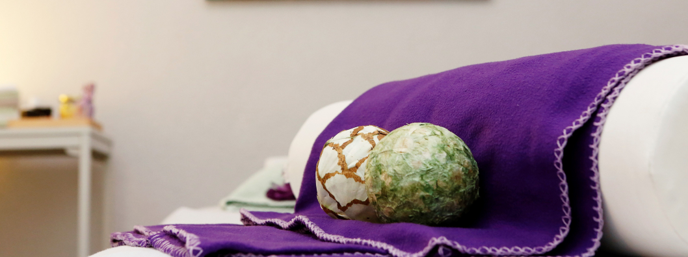

Vitamin C-Hochdosisinfusion
Vitamin C (Ascorbinsäure) wird im Körper bei sehr vielen Prozessen benötigt. Als Antioxidationsmittel sorgt es im Blut, im Gehirn, in Körperzellen und sogar im Zellkern dafür, dass freie Radikale gefangen und eliminiert werden. Desweiteren dient Vitamin C als Gefäßschutz, es hält das Blut dünnflüssiger und verhindert die Ablagerung von z.B. Cholesterin. Dadurch wirkt es vorbeugend bei allen mit Arteriosklerose verbundenen Krankheiten wie Angina Pectoris, Bluthochdruck oder Schlaganfall. Auch das Bindegewebe wird durch das Verschweißen von Eiweißen und anderen Substanzen zu Kollagenfasern durch Vitamin C gestärkt. Kollagenfasern sorgen zum einen für die Elastizität von Haut, Bändern und Sehnen und zum anderen für die Wundheilung.
In der Milz und in den Darmwänden wird Eisen gelagert, welches durch Vitamin C in die Blutbahn gebracht wird und dort zum Sauerstofftransport und zur Stärkung des Immunsystems zur Verfügung gestellt werden kann. Auch die Entgiftungsleistung der Leber wird durch Stimulation der Leberenzyme mit Vitamin C deutlich gesteigert. Dadurch werden Gifte wie Nikotin, Nitrosamine und Formaldehyd schneller und effektiver entsorgt.
Nicht zuletzt sorgt Vitamin C für die Regulation der Hormonausschüttung, weshalb es bei Schildrüsenerkrankungen, aber auch bei Wachstumsstörungen oder vermehrten Stresshormonen beteiligt ist.
Leider hat der menschliche Organismus im Laufe der Evolution die Fähigkeit zur Herstellung von Vitamin C verloren. Deshalb muss Vitamin C über die Nahrung zugeführt werden. Die besten Quellen dafür stellen frisches Obst und Gemüse dar, welche auch für den niedrig angesetzten täglichen Bedarf von 100 mg zur Versorgung ausreichen. Sollten jedoch eines oder auch mehrere der oben genannten Symptome auftreten, kann ein Mangel an Vitamin C vorliegen. Hier ist eine Infusion mit hochdosiertem Vitamin C sinnvoll. Die Umgehung des Magen-Darm-Traktes verhindert den Verlust von wertvollen Bestandteilen. So steht Vitamin C dem Körper direkt über das Blut zur Verfügung und kann seine mannigfache Wirkung unmittelbar entfalten.

B12 Infusionen
Vitamin B12 (Cobalamin) ist im Körper ein wichtiger Faktor zur Blutneubildung. Außerdem wird es zur Zellteilung und zum Wachstum benötigt. Daraus ergibt sich der gesteigerte Bedarf in Schwangerschaft und Stillzeit. Leider kann Vitamin B12 nicht durch den Darm direkt aufgenommen werden, es braucht dazu den im Magen gebildeten „Intrinsic factor“. Dadurch kann es zu schweren Mangelzuständen als Folge einer Magenschleimhauterkrankung kommen. Aber auch Darmerkrankungen wie Wurmbefall, Hepatitis, Antibiose über einen längeren Zeitraum sowie Alkohol- und Nikotinmissbrauch können zu einem Mangel an Vitamin B12 aufgrund der schlechten Aufnahme im Darm führen.
Vitamin B12 kommt fast ausschließlich in tierischen Lebensmitteln wie Fleisch, Milch und Eiern vor. Der tägliche Bedarf von Erwachsenen liegt bei 3 Mikrogramm, welches für Vegetarier und Veganer schon schwer zu erreichen ist. Ein Mangel stellt sich häufig erst schleichend ein, da Vitamin B12 als einziges wasserlösliches Vitamin im Körper gespeichert werden kann.
Nichtsdestotrotz sind die Folgen eines Mangels gravierend: Neben Zungenbrennen und nervalen Symptomen wie Gang-Unsicherheit, Lähmungen und Gefühlsstörungen kann es bis zur Blutarmut, der sogenannten perniziösen Anämie, führen.